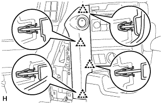
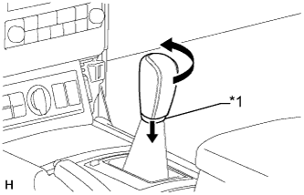

ПЕРЕДНИЙ ВЕЩЕВОЙ ЯЩИК В ОБЛИЦОВКЕ ТУННЕЛЯ ПОЛА (для моделей с автоматической трансмиссией) > СНЯТИЕ |
| 1. СНИМИТЕ ИНТЕГРИРОВАННУЮ ПАНЕЛЬ УПРАВЛЕНИЯ В СБОРЕ |
 |
Освободите 4 фиксатора.
Отсоедините разъем и снимите интегрированную панель управления в сборе.
| 2. СНИМИТЕ ПОДУШКУ ОТДЕЛОЧНОЙ НАКЛАДКИ ПАНЕЛИ ПРИБОРОВ № 2 |
 |
Наклейте защитную ленту вокруг подушки отделочной накладки панели приборов № 2.
| *1 | Защитная клейкая лента |
С помощью съемника молдингов освободите 5 фиксаторов и снимите подушку отделочной накладки панели приборов № 2.
| 3. СНИМИТЕ ПОДУШКУ ОТДЕЛОЧНОЙ НАКЛАДКИ ПАНЕЛИ ПРИБОРОВ № 1 |
| 4. СНИМИТЕ ЛЕВУЮ ОТДЕЛОЧНУЮ НАКЛАДКУ ПАНЕЛИ ПРИБОРОВ |
|  |
Освободите 4 фиксатора и снимите крайнюю отделочную накладку панели приборов.
| 5. СНИМИТЕ ПРАВУЮ ОТДЕЛОЧНУЮ НАКЛАДКУ ПАНЕЛИ ПРИБОРОВ |
 |
Освободите 4 фиксатора.
Отсоедините разъем и снимите крайнюю отделочную накладку панели приборов.
| 6. СНИМИТЕ ПЕРЕДНЮЮ НАКЛАДКУ ВЕРХНЕЙ ОБЛИЦОВКИ ПАНЕЛИ ПОЛА |
 |
Наклейте защитную ленту вокруг передней накладки верхней облицовки панели пола.
| *1 | Защитная клейкая лента |
Освободите 5 фиксаторов.
Отсоедините все разъемы и снимите переднюю накладку верхней облицовки панели пола.
| 7. СНИМИТЕ НИЖНЮЮ КРЫШКУ ПАНЕЛИ ПРИБОРОВ № 1 В СБОРЕ |
 |
Для моделей с левосторонним рулевым управлением:
Выверните винт.
Освободите 2 фиксатора и 2 направляющих и снимите нижнюю крышку панели приборов № 1.
 |
Для моделей с правосторонним рулевым управлением:
Выверните винт.
Освободите 3 фиксатора и 2 направляющих и снимите нижнюю крышку панели приборов № 1.
| 8. СНИМИТЕ ПЕРЕДНЮЮ ВСТАВКУ ВЕЩЕВОГО ЯЩИКА В ОБЛИЦОВКЕ ТУННЕЛЯ ПОЛА № 1 |
 |
Освободите 2 фиксатора и направляющую и снимите переднюю вставку вещевого ящика в облицовке туннеля пола № 1.
| 9. СНИМИТЕ НИЖНЮЮ КРЫШКУ ПАНЕЛИ ПРИБОРОВ № 2 В СБОРЕ |
Выверните винт.
Освободите 3 фиксатора и 2 направляющих и снимите нижнюю крышку панели приборов № 2.

| *A | Для моделей с левосторонним рулевым управлением | *B | Для моделей с правосторонним рулевым управлением |
| 10. СНИМИТЕ ПЕРЕДНЮЮ ВСТАВКУ ВЕЩЕВОГО ЯЩИКА В ОБЛИЦОВКЕ ТУННЕЛЯ ПОЛА № 2 |
 |
Освободите 2 фиксатора и направляющую и снимите переднюю вставку вещевого ящика в облицовке туннеля пола № 2.
| 11. СНИМИТЕ РУКОЯТКУ РЫЧАГА ПЕРЕКЛЮЧЕНИЯ ПЕРЕДАЧ В СБОРЕ |
|  |
Сдвиньте вниз чехол лючка рычага переключения передач.
| *1 | Чехол лючка рычага переключения передач |
Поверните рукоятку рычага переключения передач в направлении, указанном стрелкой, и снимите рукоятку.
| 12. СНИМИТЕ ОБЛИЦОВКУ ПАНЕЛИ ПОЛА В СБОРЕ |
 |
Наклейте защитную клейкую ленту вокруг облицовки панели пола.
| *1 | Защитная клейкая лента |
С помощью съемника молдингов расцепите 8 фиксаторов и 2 захвата.
Отсоедините все разъемы и снимите облицовку панели пола.
| 13. СНИМИТЕ ВОЗДУХОВОД № 1 СОЕДИНЕНИЯ ОТОПИТЕЛЯ И ВОЗДУХОВОДА С ДЕФЛЕКТОРОМ В СБОРЕ (для моделей с холодильной камерой) |
Освободите 4 захвата.
Отсоедините 2 зажима и снимите воздуховод № 1 соединения отопителя и воздуховода с дефлектором.
| 14. СНИМИТЕ ВОЗДУХОВОД ВЕЩЕВОГО ЯЩИКА № 1 В ОБЛИЦОВКЕ ТУННЕЛЯ ПОЛА (для моделей с одиночным кондиционером) |
 |
Снимите фиксатор и воздуховод вещевого ящика в облицовке туннеля пола № 1.
| 15. СНИМИТЕ ЗАДНЮЮ КОНЦЕВУЮ ПАНЕЛЬ КОНСОЛИ В СБОРЕ |
 |
Ослабьте 4 фиксатора и 4 захвата.
Отсоедините все разъемы и снимите заднюю концевую панель консоли.
| 16. СНИМИТЕ ВЕЩЕВОЙ ЯЩИК В ОБЛИЦОВКЕ ТУННЕЛЯ ПОЛА В СБОРЕ |
Выверните 2 винта, снимите фиксатор и выверните 5 болтов.
Отсоедините все разъемы и снимите задний ящик в облицовке туннеля пола.